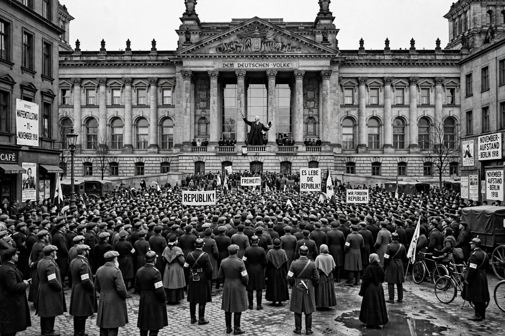

Weimar Republic
| German Reich (Weimar Republic) | |
|---|---|
 | |
| Period | 9 November 1918 – 23 March 1933 (de facto); constitution never formally abolished |
| Capital | Berlin (constituent assembly met in Weimar, 1919) |
| Presidents | Friedrich Ebert (1919–1925); Paul von Hindenburg (1925–1934) |
| Chancellors (notable) | Philipp Scheidemann; Gustav Stresemann; Heinrich Brüning; Franz von Papen; Kurt von Schleicher; Adolf Hitler (from 30 January 1933) |
| Constitution | Weimar Constitution, adopted 11 August 1919 |
The Weimar Republic, officially the German Reich, was the German state from 1918 to 1933, when it was succeeded by Nazi Germany. Named after the city of Weimar, where its constituent assembly first convened, it was Germany's first experiment in parliamentary democracy — born of defeat in the First World War and revolution, burdened by reparations, hyperinflation and political violence, briefly stabilised in the mid-1920s, and destroyed by the Great Depression and the rise of Adolf Hitler.
Foundation and crisis years, 1918–1923
As Germany collapsed in November 1918, Kaiser Wilhelm II abdicated and Social Democrat Philipp Scheidemann proclaimed a republic from a Reichstag balcony on 9 November; Friedrich Ebert headed the new government. The National Assembly, meeting in Weimar to escape unrest in Berlin, adopted a liberal constitution in August 1919 with universal suffrage (including women), proportional representation and a strong elected president armed with emergency powers under Article 48. The Treaty of Versailles — territorial losses, military restrictions and 132 billion gold marks in reparations — branded the republic with the "stab-in-the-back" myth and "November criminals" slurs from the nationalist right.
The young republic survived the Kapp Putsch (1920), communist risings, the French occupation of the Ruhr (1923) and the great hyperinflation that peaked in November 1923, when a dollar cost 4.2 trillion marks and savings were wiped out. Rentenmark currency reform and Gustav Stresemann's chancellorship ended the crisis year, in which Hitler's Beer Hall Putsch also failed.
The Golden Twenties, 1924–1929
Under Stresemann as foreign minister, Germany renegotiated reparations (Dawes Plan, 1924; Young Plan, 1929), signed the Locarno Treaties (1925), joined the League of Nations (1926) and the Kellogg–Briand Pact (1928). American loans fuelled recovery, and Weimar culture blazed: Bauhaus design, expressionist and New Objectivity art, the cinema of Lang and Murnau, cabaret and jazz, and Berlin's fame as Europe's most vibrant — and notorious — capital. Yet prosperity rested on short-term foreign credit, politics fragmented into splinter parties, and the democratic coalition parties steadily lost ground.
Collapse, 1929–1933
The Wall Street Crash of October 1929 cut off American lending; unemployment rose to some six million by 1932. Chancellor Heinrich Brüning, lacking a Reichstag majority, governed by presidential emergency decree, and deflationary austerity deepened misery. Street warfare between Nazi SA, Communists and others claimed hundreds of lives. In July 1932 the Nazis became the largest party with 37.3% of the vote; Franz von Papen's coup against Prussia's government (the Preussenschlag) destroyed the republic's strongest democratic bastion. Conservative elites, imagining they could tame him, persuaded the aged Hindenburg to appoint Hitler Chancellor on 30 January 1933. The Reichstag fire of 27 February, the Fire Decree and the Enabling Act of 23 March 1933 completed the Gleichschaltung — the "coordination" of Germany into a one-party state — though the Weimar Constitution was never formally repealed.
Legacy
Long dismissed as a doomed "democracy without democrats", Weimar is now studied both as a cautionary tale of democratic fragility and as a creative, modernising society whose failures owed as much to contingency — depression, elite miscalculation, its enemies' ruthlessness — as to constitutional design. The Federal Republic of Germany's Basic Law (1949) deliberately corrected Weimar's perceived weaknesses: a constructive vote of no confidence, a weaker president, and an eternity clause protecting democracy itself.